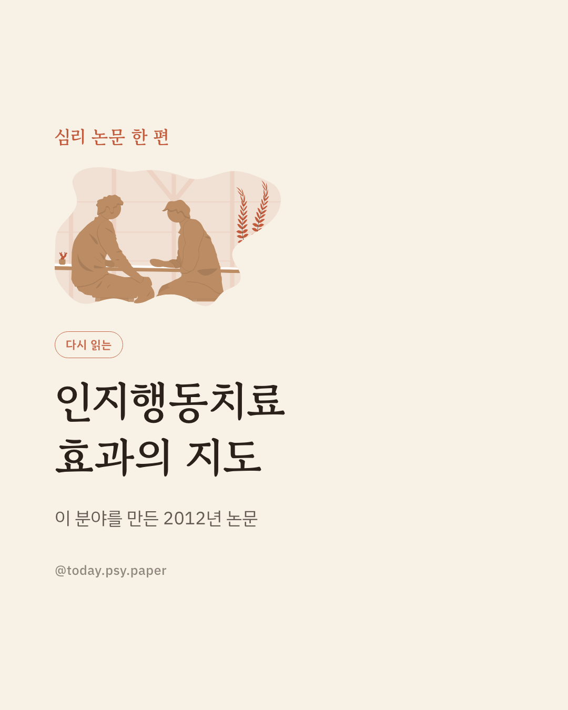
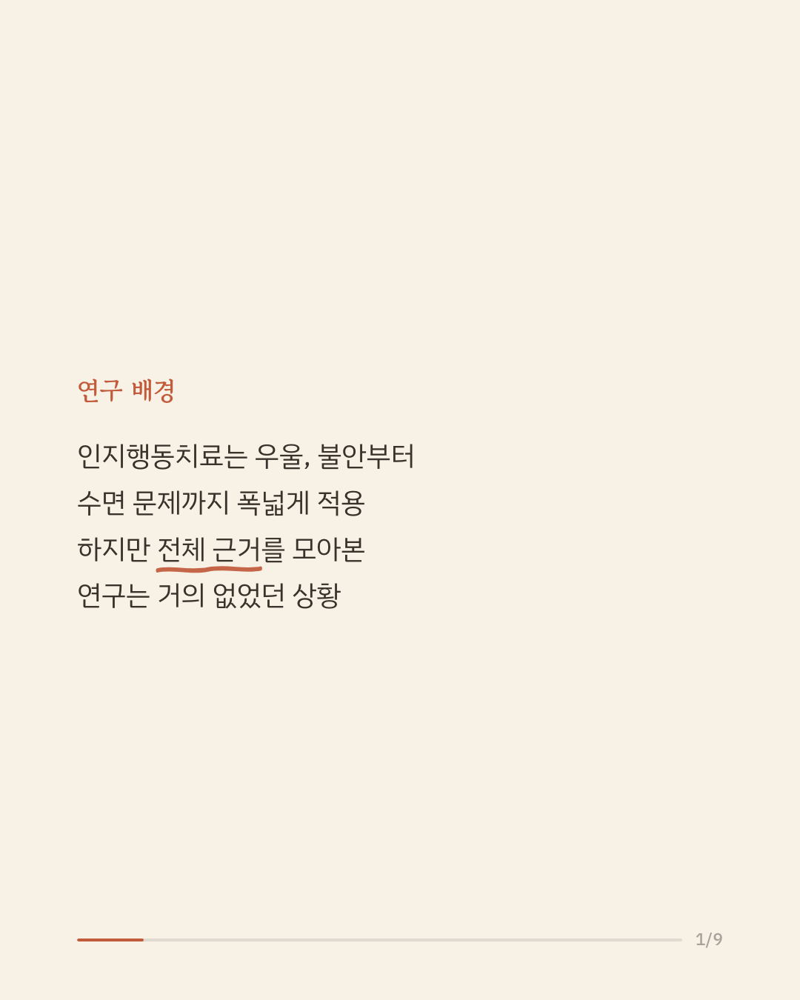
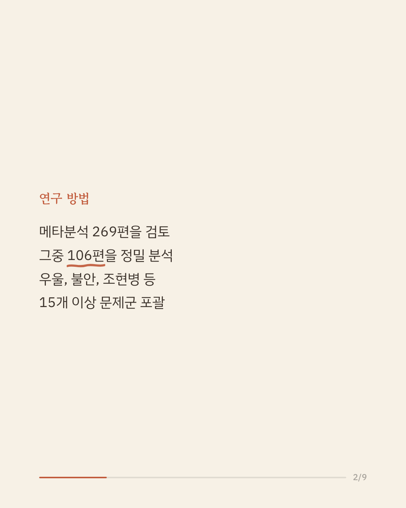
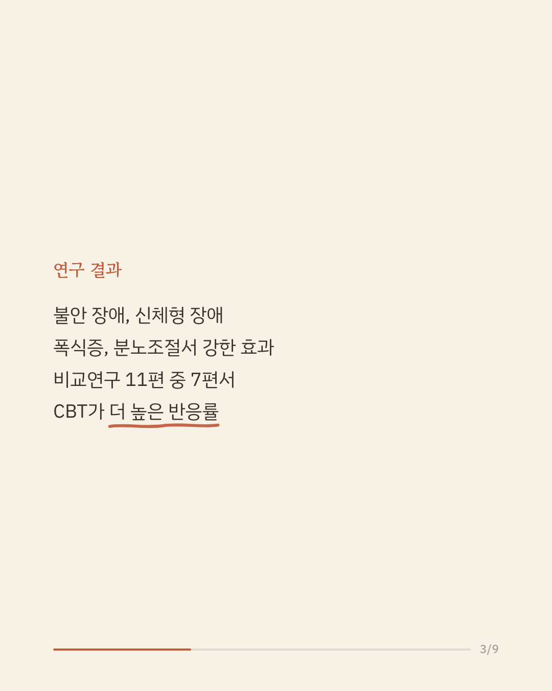
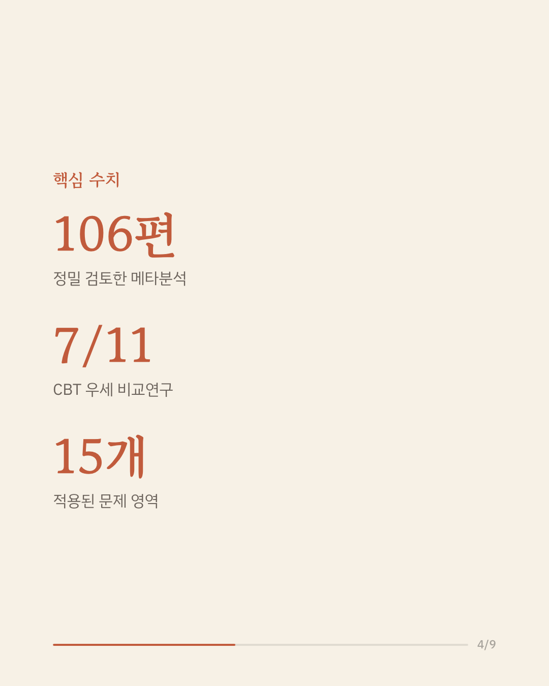
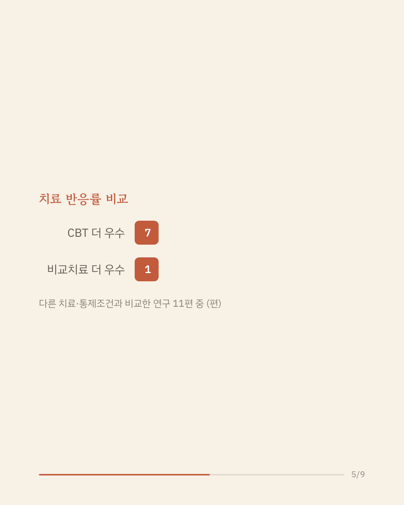
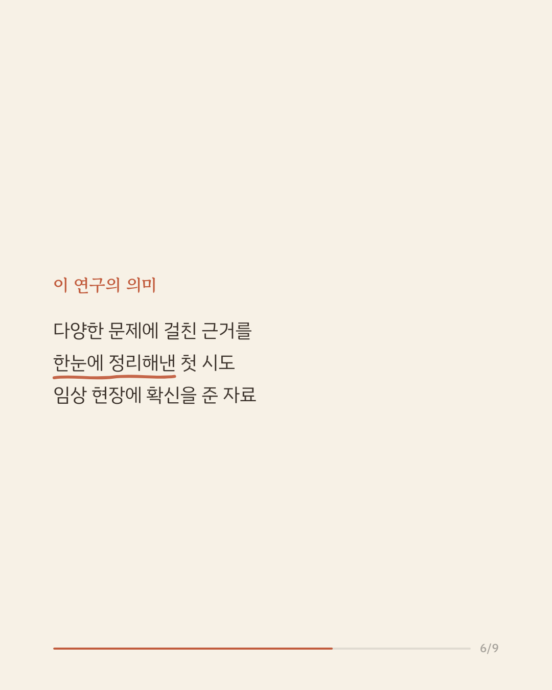
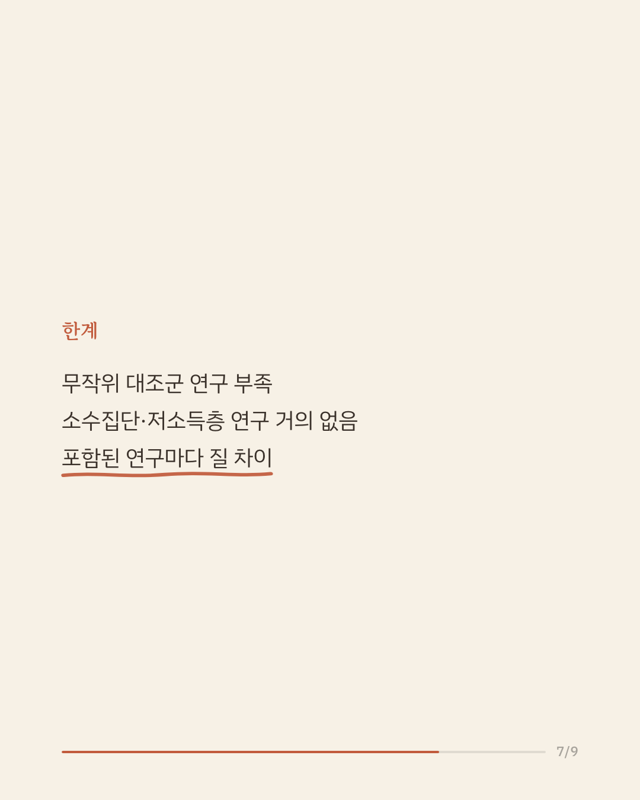
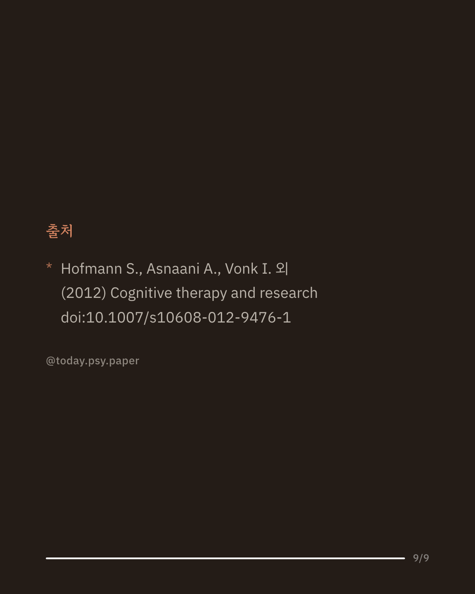

인지행동치료(CBT)는 우울, 불안, 수면 문제 등 다양한 심리적 어려움에 폭넓게 쓰이는 대표적 심리치료입니다. 하지만 그 효과를 뒷받침하는 근거가 전체적으로 얼마나 탄탄한지는 따로 정리된 적이 드물었습니다. 이 논문은 CBT의 효과를 다룬 메타분석 269편을 찾아, 그중 106편을 골라 정밀하게 검토했습니다. 우울증, 조현병, 불안 장애, 섭식 장애, 불면증, 성격 장애, 만성 통증 등 광범위한 문제에서 CBT의 효과가 확인됐고, 특히 불안 장애·신체형 장애·폭식증·분노조절 문제·전반적 스트레스에서 근거가 가장 강했습니다. 다른 치료나 통제 조건과 비교한 11편의 연구 중 7편에서 CBT가 더 높은 반응률을 보였고, CBT가 더 낮았던 경우는 1편뿐이었습니다. 이 리뷰는 CBT가 특정 질환을 넘어 심리치료 전반에서 가장 폭넓게 검증된 접근 중 하나임을 보여줍니다. 다만 무작위 대조군 연구는 아직 더 필요하고, 소수집단이나 저소득층을 대상으로 한 연구는 거의 없었습니다. 단일 연구이므로 확대 해석은 조심해야 합니다. 출처: Hofmann et al., Cognitive Therapy and Research, 2012. #인지행동치료 #심리치료연구 #임상심리학 #정신건강정보 #근거기반치료
python3 publish.py 23459093